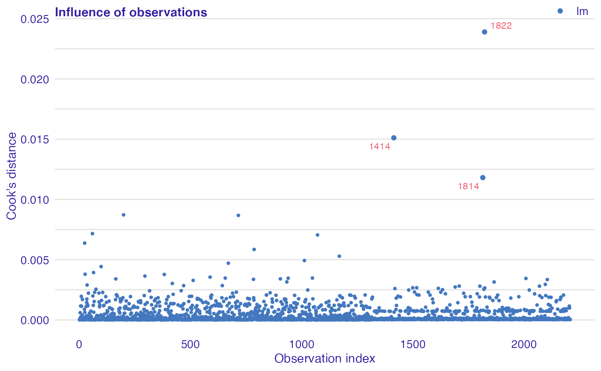

Calculates Cook's distances for each observation.
Please, note that it will work only for functions with specified update method.
model_cooksdistance(object) observationInfluence(object)
| object | An object of class |
|---|
An object of the class auditor_model_cooksdistance.
Cook, R. Dennis (1977). "Detection of Influential Observations in Linear Regression". doi:10.2307/1268249.
data(titanic_imputed, package = "DALEX") # fit a model model_glm <- glm(survived ~ ., family = binomial, data = titanic_imputed) # use DALEX package to wrap up a model into explainer glm_audit <- audit(model_glm, data = titanic_imputed, y = titanic_imputed$survived)#> Preparation of a new explainer is initiated #> -> model label : lm ( default ) #> -> data : 2207 rows 8 cols #> -> target variable : 2207 values #> -> predict function : yhat.glm will be used ( default ) #> -> predicted values : No value for predict function target column. ( default ) #> -> model_info : package stats , ver. 4.1.1 , task classification ( default ) #> -> predicted values : numerical, min = 0.008128381 , mean = 0.3221568 , max = 0.9731431 #> -> residual function : difference between y and yhat ( default ) #> -> residuals : numerical, min = -0.9628583 , mean = -2.569729e-10 , max = 0.9663346 #> A new explainer has been created!# validate a model with auditor mc <- model_cooksdistance(glm_audit) mc#> Model label: lm #> #> Observations with the largest Cook's distances: #> Cook's distance index #> 1822 0.02389822 1822 #> 1414 0.01511206 1414 #> 1814 0.01180859 1814 #> #> Quantiles of Cook's distances: #> 0% 10% 20% 30% 40% 50% #> 2.031914e-06 1.539554e-05 2.873834e-05 4.223091e-05 5.792713e-05 8.147818e-05 #> 60% 70% 80% 90% 100% #> 1.270102e-04 2.950550e-04 7.226472e-04 1.248593e-03 2.389822e-02